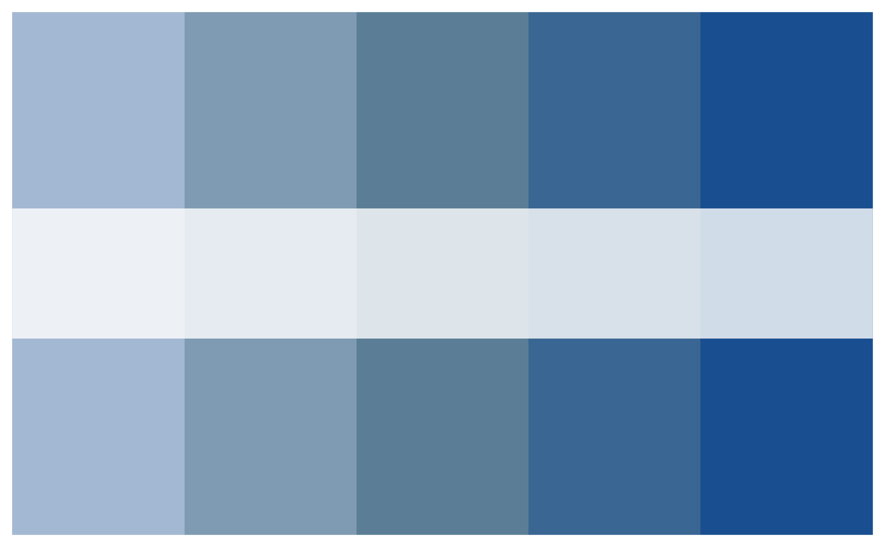
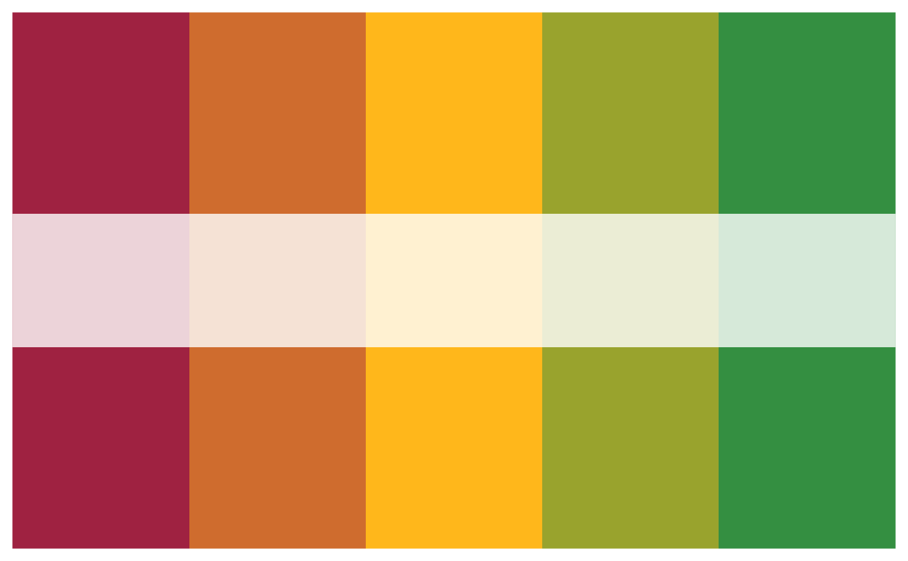

These functions apply a similar approach used and demonstrated by
ColorBrewer and has been patterned after the
syntax of the RColorBrewer package
Arguments
- n
Number of colours desired/required. Organisational palettes should have at least 3 colours and up to 9 colours maximum. All colour schemes are derived from an organisation's brand/style guidelines.
- org
Name of organisation. Currently supports only "acdc" for the Africa CDC colour palettes.
- name
Name of the organisational palette to use
- type
A character value for type of palette to use. Can be either "sequential", "divergent", or "qualitative".
Examples
paleta_create_sequential(n = 5, org = "acdc", name = "blues")
#> ✔ Colour palette "blues" is a acdc colour palette
#> ✔ blues is a sequential colour palette
#> ✔ Sequential colour palette successfully created
#> ℹ Sequential palette: #A3B8D2, #7F9BB3, #5B7E96, #3A6693, and #194F90

paleta_create_divergent(n = 5, org = "acdc", name = "rdylgn")
#> ✔ Colour palette "rdylgn" is a acdc colour palette
#> ✔ rdylgn is a divergent colour palette
#> ✔ Divergent colour palette successfully created
#> ℹ Divergent palette: #9F2241, #CF6C2E, #FFB71B, #99A32D, and #348F41
